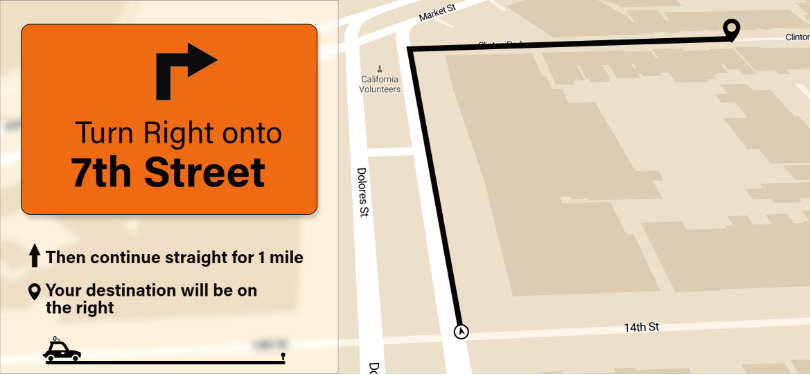
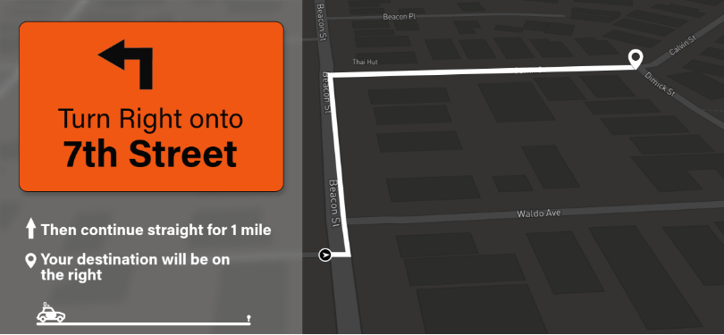

Adobe Creative challenge
Design an interface of car GPRS system.
Day Mode
It is the day mode interface where the user interface will be Bright. if its rainy then the mode will automatically changed to dark basing on the weather.

Night Mode
It is the dark mode which gets enabled for the user when it becomes dark outside or even its rainy.
